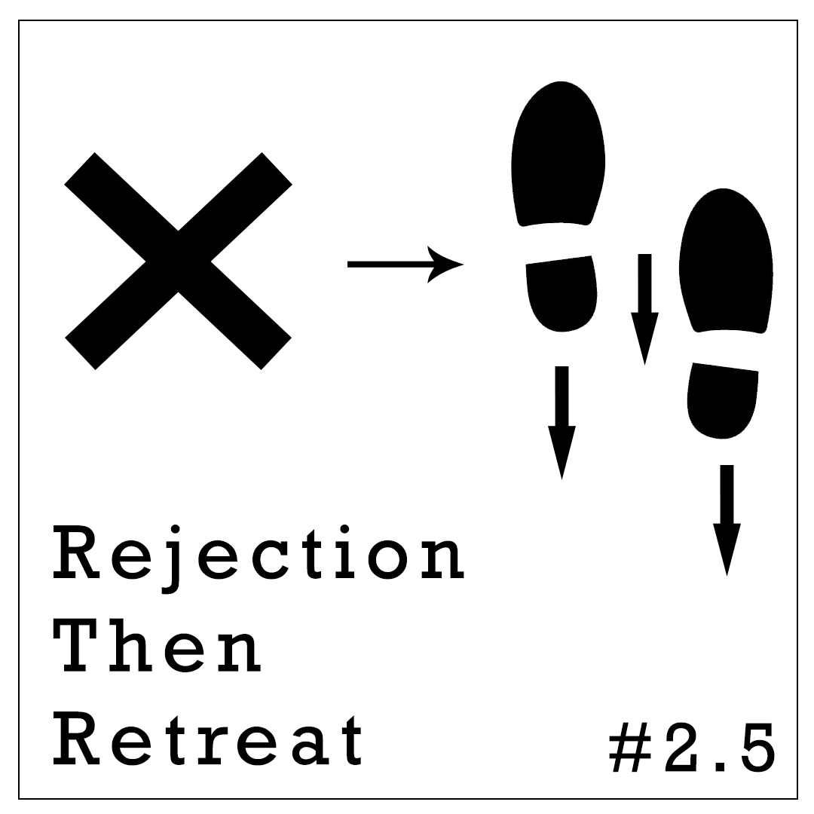

Отказ затем отступление

Прием, который Роберт Чалдини назвал “отказ затем отступление” часто используется для увеличения успешности переговоров. В основе этого приема лежит правило взаимного обмена, о котором мы писали на прошлой неделе.
Суть приема заключается в том, чтобы сначала попросить что-то нереальное, а затем “уступить” попросив то, что вы изначально планировали получить. Например, вы хотите занять у друга 500 тенге, чтобы увеличить шанс его согласия сначала вы просите у него одолжить вам 2000 тенге, а после его отказа просите дать вам “хотя бы” 500 тенге. Скорее всего он согласится.
Этот прием работает потому, что люди воспринимают вашу уступку как одолжение сделанное им и пытаются отплатить вам за него исполнением вашей просьбы. Однако, стоит помнить, что если вы попросите слишком много, то вас посчитают наглецом и последующая уступка не будет воспринята как одолжение и вам откажут.
Если вы все еще сомневаетесь в действенности этого приема, то надеемся следующий пример вас переубедит. Студентов попросили сводить несовершеннолетних заключенных в зоопарк, ожидаемо согласились всего 17% из них. Однако, когда перед просьбой о зоопарке их сначала просили в течении последующих двух лет по выходным проводить консультации с несовершеннолетними заключенными, процент согласившихся сходить с малолетними преступниками в зоопарк вырос в три раза. Впечатляет не правда ли?
Надеюсь вы все еще помните о контрастном восприятии. Оно тоже играет важную роль в эффективности этого приема. По сравнению с первой завышенной просьбой, ваши настоящие требования кажутся не такими уж и наглыми, что влияет на шанс согласия с ними. К тому же, при использовании этого приема вы выиграете в любом случае. Если вы человек согласится на ваши завышенные требования, вы получите даже больше чем ожидали, а если откажется и согласится на вторую просьбу, то вы просто достигните своей изначальной цели. Надеемся этот прием поможет вам облегчить свою жизнь и достичь большего успеха в переговорах.
Preview: Quantum
Article: Quasar